import pandas as pd
import matplotlib.pyplot as plt
import numpy as np
from surprise import Reader, Dataset, accuracy
from surprise.prediction_algorithms.knns import KNNWithMeans
from surprise.model_selection import cross_validate, KFold, train_test_split
from sklearn.metrics import roc_curve, auc, mean_squared_error
from surprise.prediction_algorithms.matrix_factorization import NMF, SVD
df = pd.read_csv('../data/Synthetic_Movie_Lens/movies.csv')
genres_column = df['genres']
unique_genres = set()
for row in genres_column:
# Split by "|" and strip whitespace
for g in row.split('|'):
unique_genres.add(g.strip())
print("Number of unique genres:", len(unique_genres))
print("Unique genres:", unique_genres)
Number of unique genres: 20
Unique genres: {'War', 'Musical', 'Horror', 'IMAX', 'Children', 'Drama', 'Adventure', '(no genres listed)', 'Crime', 'Mystery', 'Thriller', 'Sci-Fi', 'Documentary', 'Film-Noir', 'Comedy', 'Animation', 'Western', 'Fantasy', 'Romance', 'Action'}
dataset_folder = '../data/Synthetic_Movie_Lens/'
ratings_file = pd.read_csv(dataset_folder+"ratings.csv",usecols=['userId','movieId','rating'])
user_ID = ratings_file.pop('userId').values
movie_ID = ratings_file.pop('movieId').values
rating = ratings_file.pop('rating').values
sparsity = len(rating)/(len(set(movie_ID))*len(set(user_ID)))
print(f'Sparsity = {sparsity}')
Sparsity = 0.016999683055613623
u, inv = np.unique(rating, return_inverse=True)
plt.bar(u, np.bincount(inv), width=0.25)
locs, labels = plt.xticks()
plt.grid(linestyle=':')
plt.xticks(np.arange(0,6,0.5),rotation=0)
plt.ylabel('Number of ratings')
plt.xlabel('Ratings')
plt.savefig('../abhi_images/Q1B.png',dpi=300,bbox_inches='tight')
plt.show()
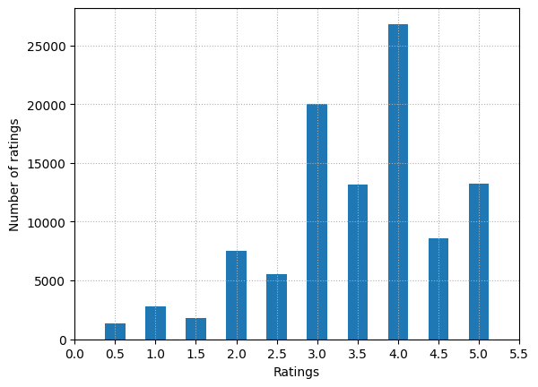
unique, counts = np.unique(movie_ID, return_counts=True)
plt.plot(range(1,len(unique)+1),counts[np.argsort(counts)[::-1]],linestyle='--',color='g')
plt.grid(linestyle=':')
plt.ylabel('Number of ratings')
plt.xlabel('Movie Index (index of movie with largest no. of ratings = 1)')
plt.savefig('../abhi_images/Q1C.png',dpi=300,bbox_inches='tight')
plt.show()
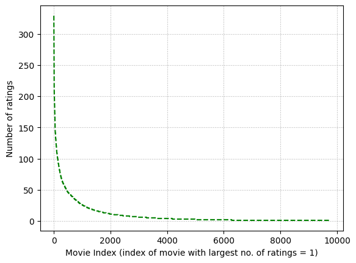
movie_count_dict = {}
x = list(range(1,len(unique)+1))
for key in unique[np.argsort(counts)[::-1]]:
for value in x:
movie_count_dict[key] = value
x.remove(value)
break
print('Top 5 rated movies (Movie ID, Index):')
print(list(movie_count_dict.items())[0:5])
Top 5 rated movies (Movie ID, Index):
[(356, 1), (318, 2), (296, 3), (593, 4), (2571, 5)]
unique, counts = np.unique(user_ID, return_counts=True)
plt.plot(range(1,len(unique)+1),counts[np.argsort(counts)[::-1]],linestyle='--',color='r')
plt.grid(linestyle=':')
plt.ylabel('Number of ratings')
plt.xlabel('User Index (index of user who gave largest no. of ratings = 1)')
plt.savefig('../abhi_images/Q1D.png',dpi=300,bbox_inches='tight')
plt.show()
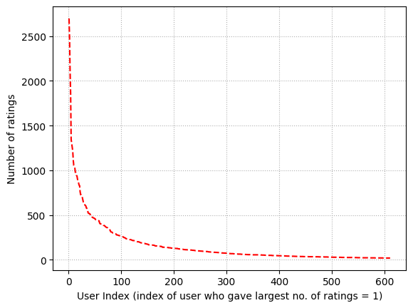
user_count_dict = {}
x = list(range(1,len(unique)+1))
for key in unique[np.argsort(counts)[::-1]]:
for value in x:
user_count_dict[key] = value
x.remove(value)
break
print('Top 5 users who rated most number of times (User ID, Index):')
print(list(user_count_dict.items())[0:5])
Top 5 users who rated most number of times (User ID, Index):
[(414, 1), (599, 2), (474, 3), (448, 4), (274, 5)]
unique_movie_ID = list(set(movie_ID))
movie_ID_list = []
var_list = []
for j in range(len(unique_movie_ID)):
indices = [i for i, x in enumerate(movie_ID) if x == unique_movie_ID[j]]
var = np.var(np.array(rating[indices]))
movie_ID_list.append(unique_movie_ID[j])
var_list.append(var)
plt.hist(var_list, bins=np.arange(0,5.5,0.5),rwidth=0.75)
plt.xticks(np.arange(0.5,5.5,0.5))
plt.xlim([0, 5.5])
plt.grid(linestyle=':')
plt.xlabel('Variance')
plt.ylabel('Count of variance')
plt.savefig('../abhi_images/Q1F.png',dpi=300,bbox_inches='tight')
plt.show()
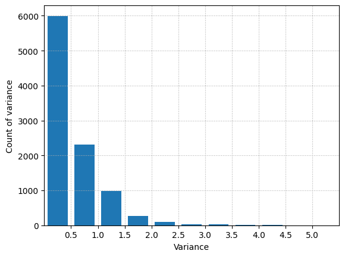
df = pd.read_csv('../data/Synthetic_Movie_Lens/ratings.csv', index_col=0)
df = df.reset_index(drop=True) # If the first column was just the old index
df.to_csv('../data/Synthetic_Movie_Lens/ratings_fixed.csv', index=False)
df.head()
| userId | movieId | rating | timestamp | |
|---|---|---|---|---|
| 0 | 496 | 112852 | 3.0 | 1415520462 |
| 1 | 391 | 1947 | 4.0 | 1030945141 |
| 2 | 387 | 1562 | 1.5 | 1095041022 |
| 3 | 474 | 2716 | 4.5 | 1053020930 |
| 4 | 483 | 88125 | 4.5 | 1311337237 |
reader = Reader(line_format='user item rating timestamp',sep=',',rating_scale=(0.5, 5),skip_lines=1)
ratings_dataset = Dataset.load_from_file(dataset_folder+"ratings_fixed.csv",reader=reader)
k = np.arange(2,102,2)
rmse = []
mae = []
for item in k:
print('Testing for k =',item)
res = cross_validate(KNNWithMeans(k=item,sim_options={'name':'pearson', 'user_based': True}),
measures=['rmse','mae'],data = ratings_dataset,cv=10,n_jobs=-1)
rmse.append(np.mean(res['test_rmse']))
mae.append(np.mean(res['test_mae']))
Testing for k = 2
Testing for k = 4
Testing for k = 6
Testing for k = 8
Testing for k = 10
Testing for k = 12
Testing for k = 14
Testing for k = 16
Testing for k = 18
Testing for k = 20
Testing for k = 22
Testing for k = 24
Testing for k = 26
Testing for k = 28
Testing for k = 30
Testing for k = 32
Testing for k = 34
Testing for k = 36
Testing for k = 38
Testing for k = 40
Testing for k = 42
Testing for k = 44
Testing for k = 46
Testing for k = 48
Testing for k = 50
Testing for k = 52
Testing for k = 54
Testing for k = 56
Testing for k = 58
Testing for k = 60
Testing for k = 62
Testing for k = 64
Testing for k = 66
Testing for k = 68
Testing for k = 70
Testing for k = 72
Testing for k = 74
Testing for k = 76
Testing for k = 78
Testing for k = 80
Testing for k = 82
Testing for k = 84
Testing for k = 86
Testing for k = 88
Testing for k = 90
Testing for k = 92
Testing for k = 94
Testing for k = 96
Testing for k = 98
Testing for k = 100
plt.plot(k,rmse,linestyle='--',color='r')
plt.grid(linestyle=':')
plt.ylabel('Avg. RMSE')
plt.xlabel('Number of neighbours')
plt.savefig('../abhi_images/Q4A.png',dpi=300,bbox_inches='tight')
plt.show()
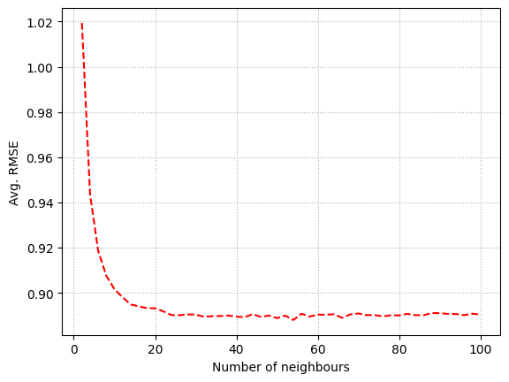
plt.plot(k,mae,linestyle='--',color='b')
plt.grid(linestyle=':')
plt.ylabel('Avg. MAE')
plt.xlabel('Number of neighbours')
plt.savefig('../abhi_images/Q4B.png',dpi=300,bbox_inches='tight')
plt.show()
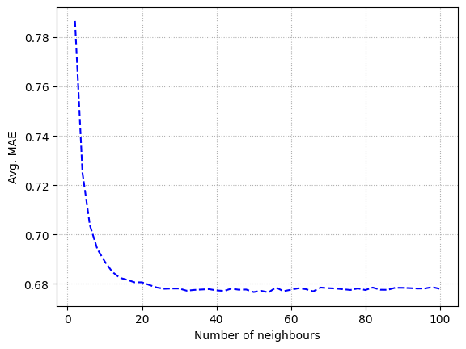
print(f'RMSE at k=20: {rmse[9]}')
print(f'MAE at k=20: {mae[9]}')
RMSE at k=20: 0.8931874735689023
MAE at k=20: 0.6806297276068325
| Subset | Best k | Min Avg RMSE |
|---|---|---|
| Popular | 42 | 0.8702 |
| Unpopular | 2 | 1.0637 |
| High-Variance | 2 | 1.5038 |
import numpy as np
import pandas as pd
import matplotlib.pyplot as plt
from collections import defaultdict
from tqdm import tqdm
from surprise import Dataset, Reader, KNNWithMeans, accuracy
from surprise.model_selection import KFold
def trim_data(raw_data, method='popular', rating_threshold=2, var_threshold=2.0, min_var_count=5):
item_ratings = defaultdict(list)
for (u, i, r, t) in raw_data:
item_ratings[i].append(r)
if method == 'popular':
keep_items = {i for i, rlist in item_ratings.items() if len(rlist) > rating_threshold}
elif method == 'unpopular':
keep_items = {i for i, rlist in item_ratings.items() if len(rlist) <= rating_threshold}
elif method == 'high_variance':
keep_items = []
for i, rlist in item_ratings.items():
if len(rlist) >= min_var_count and np.var(rlist) >= var_threshold:
keep_items.append(i)
keep_items = set(keep_items)
else:
raise ValueError("method must be 'popular', 'unpopular', or 'high_variance'")
trimmed = [(u, i, r, t) for (u, i, r, t) in raw_data if i in keep_items]
return trimmed
def evaluate_knn_for_subset(trimmed_raw_data, k_values, user_based=True):
df = pd.DataFrame(trimmed_raw_data, columns=['userID','itemID','rating','timestamp'])
reader = Reader(rating_scale=(0.5, 5))
data = Dataset.load_from_df(df[['userID','itemID','rating']], reader)
kf = KFold(n_splits=10, random_state=0, shuffle=True)
rmse_results = []
for k in tqdm(k_values, desc="k-sweep"):
fold_rmse = []
for trainset, testset in tqdm(kf.split(data), desc=f"(k={k}) folds", leave=False):
algo = KNNWithMeans(k=k, sim_options={'name': 'pearson','user_based': user_based}, verbose=False)
algo.fit(trainset)
predictions = algo.test(testset)
fold_rmse.append(accuracy.rmse(predictions, verbose=False))
rmse_results.append(np.mean(fold_rmse))
return rmse_results
full_data_raw = ratings_dataset.raw_ratings
popular_data_raw = trim_data(full_data_raw, method='popular', rating_threshold=2)
unpopular_data_raw = trim_data(full_data_raw, method='unpopular', rating_threshold=2)
high_var_data_raw = trim_data(full_data_raw, method='high_variance', var_threshold=2.0, min_var_count=5)
k_values = list(range(2, 101, 2))
rmse_popular = evaluate_knn_for_subset(popular_data_raw, k_values, user_based=True)
best_k_popular = k_values[np.argmin(rmse_popular)]
best_rmse_popular = min(rmse_popular)
print("=== Popular Subset ===")
print(f"Best k: {best_k_popular}, Min Avg RMSE: {best_rmse_popular:.4f}")
plt.figure(figsize=(6,4))
plt.plot(k_values, rmse_popular, marker='o')
plt.title("RMSE vs. k (Popular Subset)")
plt.xlabel("k (neighbors)")
plt.ylabel("10-fold Avg RMSE")
plt.show()
rmse_unpopular = evaluate_knn_for_subset(unpopular_data_raw, k_values, user_based=True)
best_k_unpopular = k_values[np.argmin(rmse_unpopular)]
best_rmse_unpopular = min(rmse_unpopular)
print("=== Unpopular Subset ===")
print(f"Best k: {best_k_unpopular}, Min Avg RMSE: {best_rmse_unpopular:.4f}")
plt.figure(figsize=(6,4))
plt.plot(k_values, rmse_unpopular, marker='o', color='orange')
plt.title("RMSE vs. k (Unpopular Subset)")
plt.xlabel("k (neighbors)")
plt.ylabel("10-fold Avg RMSE")
plt.show()
rmse_highvar = evaluate_knn_for_subset(high_var_data_raw, k_values, user_based=True)
best_k_highvar = k_values[np.argmin(rmse_highvar)]
best_rmse_highvar = min(rmse_highvar)
print("=== High-Variance Subset ===")
print(f"Best k: {best_k_highvar}, Min Avg RMSE: {best_rmse_highvar:.4f}")
plt.figure(figsize=(6,4))
plt.plot(k_values, rmse_highvar, marker='o', color='green')
plt.title("RMSE vs. k (High-Variance Subset)")
plt.xlabel("k (neighbors)")
plt.ylabel("10-fold Avg RMSE")
plt.show()
k-sweep: 100%|██████████| 50/50 [19:28<00:00, 23.37s/it]
=== Popular Subset ===
Best k: 42, Min Avg RMSE: 0.8702
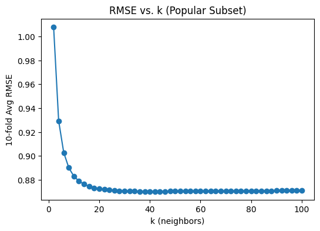
k-sweep: 100%|██████████| 50/50 [00:26<00:00, 1.87it/s]
=== Unpopular Subset ===
Best k: 2, Min Avg RMSE: 1.0637
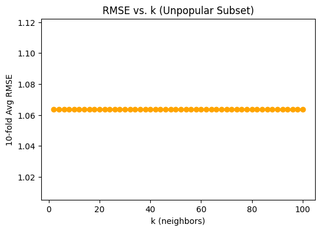
k-sweep: 100%|██████████| 50/50 [00:02<00:00, 22.29it/s]
=== High-Variance Subset ===
Best k: 2, Min Avg RMSE: 1.5038
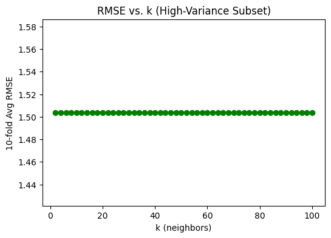
thres=[2.5,3.0,3.5,4.0]
raw_full=ratings_dataset.raw_ratings
df_full=pd.DataFrame(raw_full,columns=['u','i','r','t'])
reader=Reader(rating_scale=(0.5,5))
data_full=Dataset.load_from_df(df_full[['u','i','r']],reader)
trainf,testf=train_test_split(data_full,test_size=0.1)
algof=KNNWithMeans(k=20,sim_options={'name':'pearson'},verbose=False).fit(trainf)
resf=algof.test(testf)
fig,ax=plt.subplots()
for x in thres:
y=[1 if row.r_ui>x else 0 for row in resf]
fpr,tpr,_=roc_curve(y,[row.est for row in resf])
ax.plot(fpr,tpr,label="AUC="+str(auc(fpr,tpr))+", thr="+str(x))
ax.plot([0,1],[0,1],'--',color='g',alpha=.5)
plt.legend(loc='best')
plt.grid(linestyle=':')
plt.title('No Trimming (k=20)')
plt.xlabel('FPR')
plt.ylabel('TPR')
plt.show()
raw_pop=trim_data(raw_full,'popular',2)
df_pop=pd.DataFrame(raw_pop,columns=['u','i','r','t'])
data_pop=Dataset.load_from_df(df_pop[['u','i','r']],reader)
trainp,testp=train_test_split(data_pop,test_size=0.1)
algop=KNNWithMeans(k=best_k_popular,sim_options={'name':'pearson'},verbose=False).fit(trainp)
resp=algop.test(testp)
fig,ax=plt.subplots()
for x in thres:
y=[1 if row.r_ui>x else 0 for row in resp]
fpr,tpr,_=roc_curve(y,[row.est for row in resp])
ax.plot(fpr,tpr,label="AUC="+str(auc(fpr,tpr))+", thr="+str(x))
ax.plot([0,1],[0,1],'--',color='g',alpha=.5)
plt.legend(loc='best')
plt.grid(linestyle=':')
plt.title(f'Popular (k={best_k_popular})')
plt.xlabel('FPR')
plt.ylabel('TPR')
plt.show()
raw_unp=trim_data(raw_full,'unpopular',2)
df_unp=pd.DataFrame(raw_unp,columns=['u','i','r','t'])
data_unp=Dataset.load_from_df(df_unp[['u','i','r']],reader)
trainu,testu=train_test_split(data_unp,test_size=0.1)
algou=KNNWithMeans(k=best_k_unpopular,sim_options={'name':'pearson'},verbose=False).fit(trainu)
resu=algou.test(testu)
fig,ax=plt.subplots()
for x in thres:
y=[1 if row.r_ui>x else 0 for row in resu]
fpr,tpr,_=roc_curve(y,[row.est for row in resu])
ax.plot(fpr,tpr,label="AUC="+str(auc(fpr,tpr))+", thr="+str(x))
ax.plot([0,1],[0,1],'--',color='g',alpha=.5)
plt.legend(loc='best')
plt.grid(linestyle=':')
plt.title(f'Unpopular (k={best_k_unpopular})')
plt.xlabel('FPR')
plt.ylabel('TPR')
plt.show()
raw_hv=trim_data(raw_full,'high_variance',2,2.0,5)
df_hv=pd.DataFrame(raw_hv,columns=['u','i','r','t'])
data_hv=Dataset.load_from_df(df_hv[['u','i','r']],reader)
trainh,testh=train_test_split(data_hv,test_size=0.1)
algoh=KNNWithMeans(k=best_k_highvar,sim_options={'name':'pearson'},verbose=False).fit(trainh)
resh=algoh.test(testh)
fig,ax=plt.subplots()
for x in thres:
y=[1 if row.r_ui>x else 0 for row in resh]
fpr,tpr,_=roc_curve(y,[row.est for row in resh])
ax.plot(fpr,tpr,label="AUC="+str(auc(fpr,tpr))+", thr="+str(x))
ax.plot([0,1],[0,1],'--',color='g',alpha=.5)
plt.legend(loc='best')
plt.grid(linestyle=':')
plt.title(f'High Variance (k={best_k_highvar})')
plt.xlabel('FPR')
plt.ylabel('TPR')
plt.show()
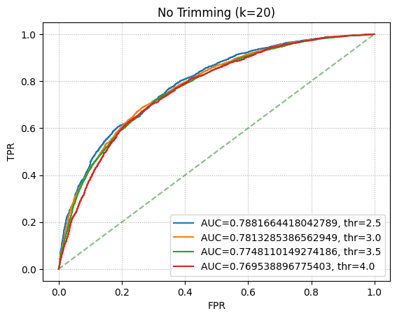
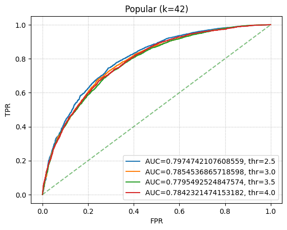
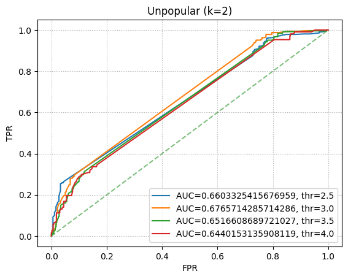
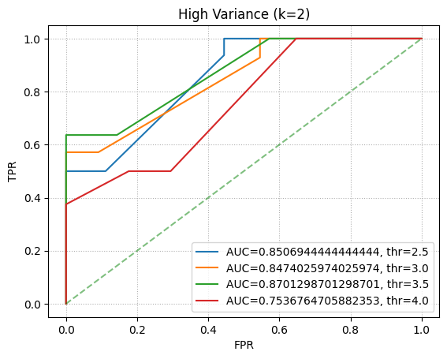
k = np.arange(2,52,2)
rmse_NMF_50 = []
mae_NMF_50 = []
for item in k:
print('Testing for k =',item)
res = cross_validate(NMF(n_factors=item,n_epochs=50,verbose=False),
measures=['rmse','mae'],data = ratings_dataset,cv=10,n_jobs=-1)
rmse_NMF_50.append(np.mean(res['test_rmse']))
mae_NMF_50.append(np.mean(res['test_mae']))
Testing for k = 2
Testing for k = 4
Testing for k = 6
Testing for k = 8
Testing for k = 10
Testing for k = 12
Testing for k = 14
Testing for k = 16
Testing for k = 18
Testing for k = 20
Testing for k = 22
Testing for k = 24
Testing for k = 26
Testing for k = 28
Testing for k = 30
Testing for k = 32
Testing for k = 34
Testing for k = 36
Testing for k = 38
Testing for k = 40
Testing for k = 42
Testing for k = 44
Testing for k = 46
Testing for k = 48
Testing for k = 50
plt.plot(k,rmse_NMF_50,linestyle='--',color='r')
plt.grid(linestyle=':')
plt.title('Avg. RMSE for NMF')
plt.ylabel('Avg. RMSE')
plt.xlabel('Number of latent factors')
#plt.savefig('../abhi_images/Q8A_RMSE.png',dpi=300,bbox_inches='tight')
plt.show()
plt.plot(k,mae_NMF_50,linestyle='--',color='b')
plt.grid(linestyle=':')
plt.title('Avg. MAE for NMF')
plt.ylabel('Avg. MAE')
plt.xlabel('Number of latent factors')
#plt.savefig('../abhi_images/Q8A_MAE.png',dpi=300,bbox_inches='tight')
plt.show()
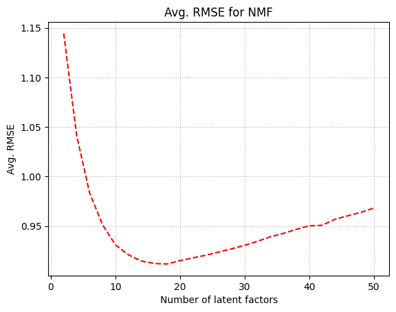
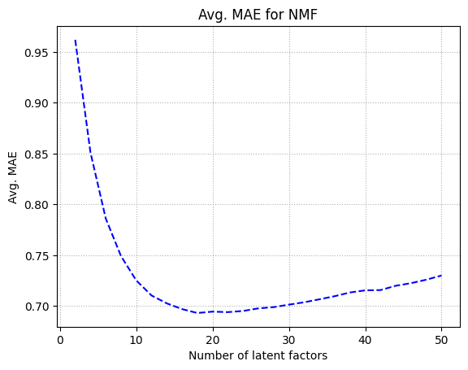
print("Minimum avg. RMSE (NMF): %f, value of k: %d" % (min(rmse_NMF_50),k[np.argmin(rmse_NMF_50)]))
print("Minimum avg. MAE (NMF): %f, value of k: %d" % (min(mae_NMF_50), k[np.argmin(mae_NMF_50)]))
Minimum avg. RMSE (NMF): 0.911686, value of k: 18
Minimum avg. MAE (NMF): 0.693172, value of k: 18
| Subset | Best k | Min RMSE |
|---|---|---|
| Popular | 20 | 0.8938076299869282 |
| Unpopular | 44 | 1.1340514349876818 |
| High Var | 20 | 1.5726049136610523 |
from tqdm import tqdm
def trim_data(raw_data, method='popular', rating_threshold=2, var_threshold=2.0, min_var_count=5):
d = defaultdict(list)
for (u,i,r,t) in raw_data:
d[i].append(r)
if method == 'popular':
keep = {i for i in d if len(d[i]) > rating_threshold}
elif method == 'unpopular':
keep = {i for i in d if len(d[i]) <= rating_threshold}
elif method == 'high_variance':
keep = []
for i in d:
if len(d[i]) >= min_var_count and np.var(d[i]) >= var_threshold:
keep.append(i)
keep = set(keep)
else:
raise ValueError
return [(u,i,r,t) for (u,i,r,t) in raw_data if i in keep]
def evaluate_nmf_10fold(trimmed_raw_data):
df = pd.DataFrame(trimmed_raw_data, columns=['userID','itemID','rating','timestamp'])
reader = Reader(rating_scale=(0.5, 5))
data = Dataset.load_from_df(df[['userID','itemID','rating']], reader)
k_values = range(2, 51, 2)
kf = KFold(n_splits=10, random_state=0, shuffle=True)
rmse_results = []
for k in tqdm(k_values, desc="Sweeping factors"):
fold_rmse = []
for trainset, testset in kf.split(data):
algo = NMF(n_factors=k, n_epochs=50, verbose=False)
algo.fit(trainset)
preds = algo.test(testset)
fold_rmse.append(accuracy.rmse(preds, verbose=False))
rmse_results.append(np.mean(fold_rmse))
return k_values, rmse_results, df
def plot_roc_nmf(df, best_k, title):
reader = Reader(rating_scale=(0.5, 5))
data = Dataset.load_from_df(df[['userID','itemID','rating']], reader)
trainset, testset = train_test_split(data, test_size=0.1, random_state=0)
algo = NMF(n_factors=best_k, n_epochs=50, verbose=False)
algo.fit(trainset)
preds = algo.test(testset)
thresholds = [2.5, 3.0, 3.5, 4.0]
fig, ax = plt.subplots()
for t in thresholds:
y_true = [1 if p.r_ui > t else 0 for p in preds]
y_score = [p.est for p in preds]
fpr, tpr, _ = roc_curve(y_true, y_score)
ax.plot(fpr, tpr, label="AUC="+str(auc(fpr,tpr))+", thr="+str(t))
ax.plot([0,1],[0,1],'--',color='g',alpha=.5)
plt.legend(loc='best')
plt.title(title)
plt.xlabel("FPR")
plt.ylabel("TPR")
plt.grid(linestyle=':')
plt.show()
raw_data = ratings_dataset.raw_ratings
df_full = pd.DataFrame(raw_data, columns=['userID','itemID','rating','timestamp'])
reader = Reader(rating_scale=(0.5, 5))
data_full = Dataset.load_from_df(df_full[['userID','itemID','rating']], reader)
plot_roc_nmf(df_full, 18, "No-Trim NMF ROC (k=18)")
pop_data = trim_data(raw_data, 'popular', 2)
kp, rp, dfp = evaluate_nmf_10fold(pop_data)
best_kp = kp[np.argmin(rp)]
plt.plot(kp, rp, marker='o')
plt.title('Popular NMF')
plt.xlabel('Factors')
plt.ylabel('Avg RMSE')
plt.show()
print("Popular best factors:", best_kp, "Min RMSE:", min(rp))
plot_roc_nmf(dfp, best_kp, 'Popular NMF ROC')
unp_data = trim_data(raw_data, 'unpopular', 2)
ku, ru, dfu = evaluate_nmf_10fold(unp_data)
best_ku = ku[np.argmin(ru)]
plt.plot(ku, ru, marker='o')
plt.title('Unpopular NMF')
plt.xlabel('Factors')
plt.ylabel('Avg RMSE')
plt.show()
print("Unpopular best factors:", best_ku, "Min RMSE:", min(ru))
plot_roc_nmf(dfu, best_ku, 'Unpopular NMF ROC')
hv_data = trim_data(raw_data, 'high_variance', 2, 2.0, 5)
kh, rh, dfh = evaluate_nmf_10fold(hv_data)
best_kh = kh[np.argmin(rh)]
plt.plot(kh, rh, marker='o')
plt.title('High-Variance NMF')
plt.xlabel('Factors')
plt.ylabel('Avg RMSE')
plt.show()
print("High Var best factors:", best_kh, "Min RMSE:", min(rh))
plot_roc_nmf(dfh, best_kh, 'High-Variance NMF ROC')
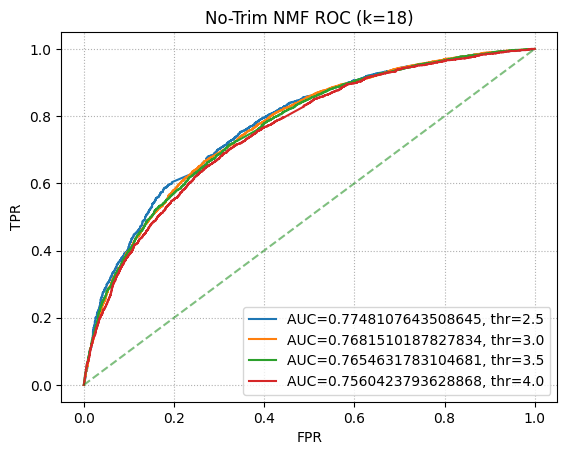
Sweeping factors: 100%|██████████| 25/25 [38:19<00:00, 91.98s/it]
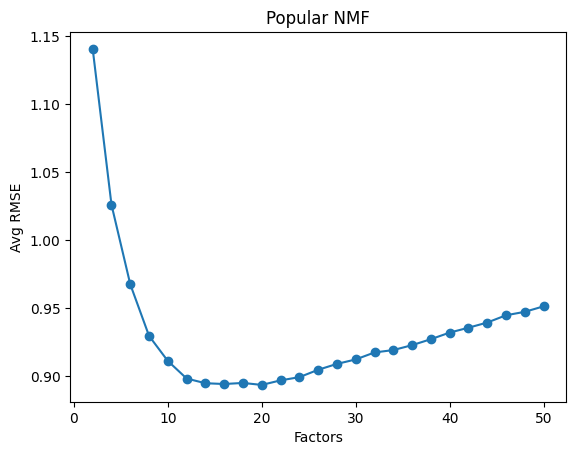
Popular best factors: 20 Min RMSE: 0.8938076299869282
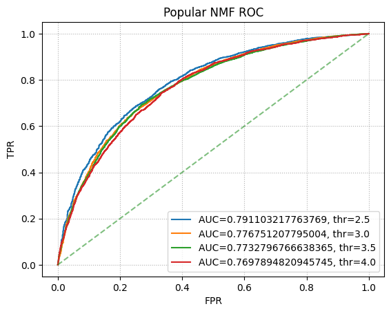
Sweeping factors: 100%|██████████| 25/25 [04:42<00:00, 11.29s/it]
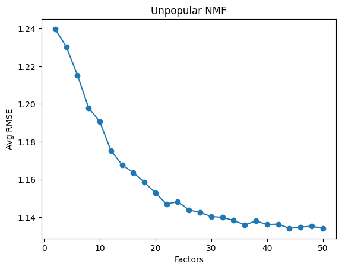
Unpopular best factors: 44 Min RMSE: 1.1340514349876818
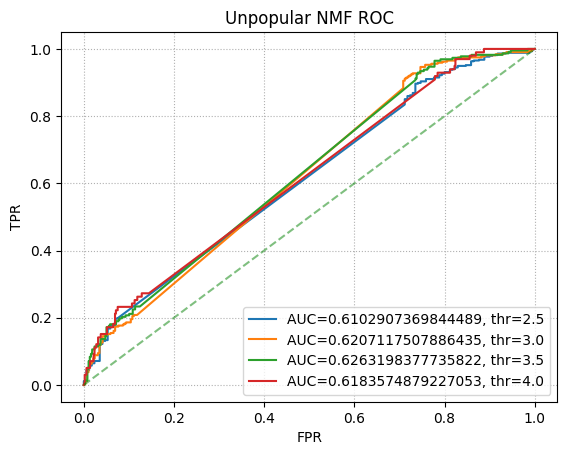
Sweeping factors: 100%|██████████| 25/25 [00:08<00:00, 2.83it/s]
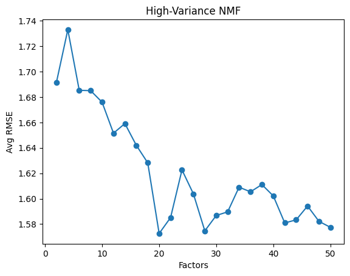
High Var best factors: 20 Min RMSE: 1.5726049136610523
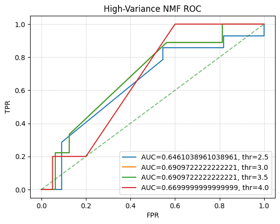
genre = pd.read_csv(dataset_folder+'movies.csv',usecols=['movieId','title','genres'])
trainset, testset = train_test_split(ratings_dataset, test_size=0.1)
nmf = NMF(n_factors=20,n_epochs=50,verbose=False)
nmf.fit(trainset).test(testset)
U = nmf.pu
V = nmf.qi
cols = [i for i in range(20)]
for item in cols:
print('Column number of V: ',item)
selected_col = V[:,item]
sorted_col = np.argsort(selected_col)[::-1]
for i in sorted_col[0:10]:
print(genre['genres'][i])
print('---------------------------------------------')
Column number of V: 0
Comedy
Drama
Drama|Romance
Comedy
Adventure|Drama|Sci-Fi
Action|Comedy|Drama|War
Action|Adventure|Comedy|Sci-Fi
Documentary
Comedy|Drama|Romance
Comedy|Drama|Romance
---------------------------------------------
Column number of V: 1
Adventure|Sci-Fi|Thriller
Comedy
Crime|Drama|Thriller
Action|Horror|Thriller
Drama|Mystery
Drama
Action|Crime
Action|Drama|Romance|War
Comedy
Comedy|Drama|Romance
---------------------------------------------
Column number of V: 2
Comedy|Romance
Action|Sci-Fi
Comedy|Crime
Action|Adventure|Drama|Thriller
Thriller
Drama|Romance
Musical
Comedy
Drama|Romance
Mystery|Thriller
---------------------------------------------
Column number of V: 3
Action|Crime|Drama|Thriller
Comedy|Drama|Romance
Comedy|Drama
Drama
Adventure|Drama|Romance
Action|Drama|Thriller
Drama|War
Action|Comedy|Crime|Drama
Comedy|Drama
Adventure|Comedy|Thriller
---------------------------------------------
Column number of V: 4
Horror
Comedy|Romance
Adventure|Children|Fantasy
Drama|Fantasy
Children|Comedy|Fantasy
Drama|Mystery|Thriller
Drama
Action|Drama|Romance|War
Action|Comedy
Drama
---------------------------------------------
Column number of V: 5
Drama|Romance
Comedy
Comedy|Drama
Fantasy|Mystery|Western
Action|Comedy|Western
Comedy|Crime
Drama|Mystery|Romance
Drama|Film-Noir|Romance
Comedy|Crime
Adventure
---------------------------------------------
Column number of V: 6
Action|Fantasy|Thriller
Drama|Fantasy
Action|Crime|Thriller
Drama
Comedy
Drama|Thriller
Comedy|Horror
Comedy|Drama
Action|Thriller
Adventure|Animation|Children|Comedy|Fantasy
---------------------------------------------
Column number of V: 7
Documentary
Horror|Sci-Fi|Thriller
Drama
Drama
Adventure|Children|Fantasy|Sci-Fi
Action|Adventure|Sci-Fi|Thriller
Comedy|Crime
Drama
Horror|Mystery|Thriller
Action|Thriller
---------------------------------------------
Column number of V: 8
Comedy|Drama|Romance
Adventure|Comedy|Drama
Comedy
Drama
Drama|Western
Drama|Mystery
Comedy
Comedy|Crime
Comedy
Comedy|Horror
---------------------------------------------
Column number of V: 9
Comedy|Drama|Romance
Horror
Drama|Romance
Animation|Comedy|Musical
Horror|Sci-Fi
Thriller
Comedy
Adventure|Animation|Children|Comedy
Comedy
Crime|Drama|Film-Noir
---------------------------------------------
Column number of V: 10
Crime|Drama
Action|Comedy|Western
Comedy|Drama
Comedy|Documentary|Musical
Fantasy|Horror|Thriller
Adventure|Comedy|Thriller
Action|Adventure|Sci-Fi
Children|Comedy|Mystery
Drama
Comedy|Drama
---------------------------------------------
Column number of V: 11
Action|Sci-Fi|War
Action|Crime|Drama
Thriller
Comedy|Drama|Romance
Adventure|Western
Comedy|Drama
Action|Comedy|Western
Drama
Comedy|Romance
Drama|Musical
---------------------------------------------
Column number of V: 12
Action|Fantasy|Thriller
Adventure|Children|Fantasy
Comedy|Horror
Drama
Comedy|Romance
Action|Adventure|Sci-Fi|Thriller
Documentary
Comedy|Drama
Action|Drama|War
Crime|Drama
---------------------------------------------
Column number of V: 13
Musical
Animation|Children|Comedy
Comedy
Horror|Thriller
Action|Crime|Thriller
Action|Sci-Fi
Action|Comedy|Crime|Drama
Comedy|Drama|Romance|Thriller
Action|Crime|Drama|Thriller
Crime|Drama|Romance|Thriller
---------------------------------------------
Column number of V: 14
Comedy|Horror
Action|Horror|Thriller
Adventure|Children
Action|Drama
Comedy|Drama|Musical
Adventure|Comedy|Crime|Drama|Romance
Comedy|Fantasy
Action|Crime
Comedy|Crime|Drama|War
Adventure|Animation|Children|Comedy|Fantasy|Romance
---------------------------------------------
Column number of V: 15
Drama
Comedy|Drama|Romance
Comedy
Comedy|Drama|Romance
Action|Crime
Drama
Musical
Comedy|Crime
Drama|Romance
Comedy|Romance
---------------------------------------------
Column number of V: 16
Action|Crime|Drama|Thriller
Adventure|Drama|Romance
Crime|Drama|Fantasy
Action|Comedy|Crime|Thriller
Drama
Drama|Thriller
Comedy|Romance
Drama
Action|Adventure|Sci-Fi|Thriller|IMAX
Drama|Romance
---------------------------------------------
Column number of V: 17
Horror|Thriller
Action|Crime
Action|Crime|Drama|Thriller
Action|Adventure|Thriller
Horror|Mystery
Comedy
Comedy
Drama|Mystery|Thriller
Horror|Sci-Fi|Thriller
Drama
---------------------------------------------
Column number of V: 18
Documentary
Comedy|Drama
Comedy
Comedy|Drama|Romance
Drama|Romance
Drama|Romance|Sci-Fi
Documentary
Comedy|Drama|Musical
Drama
Adventure|Drama
---------------------------------------------
Column number of V: 19
Drama|Romance
Action|Thriller
Action|Adventure|Crime|Thriller
Action|Drama|War
Comedy|Fantasy|Romance
Documentary
Comedy
Horror|Thriller
Comedy
Drama|Thriller
---------------------------------------------
Full Data
| Subset | Best k (RMSE) | Min RMSE | Best k (MAE) | Min MAE | Chosen k |
|---|---|---|---|---|---|
| Full Data | 26 | 0.8652 | 36 | 0.6642 | 26 |
Popular Subset
Unpopular Subset
High-Variance Subset
| Subset | Best k | Min RMSE |
|---|---|---|
| Popular | 32 | 0.8559 |
| Unpopular | 6 | 0.8953 |
| High-Variance | 40 | 1.5611 |
import numpy as np
import pandas as pd
import matplotlib.pyplot as plt
from tqdm import tqdm
from surprise import SVD, Dataset, Reader, accuracy
from surprise.model_selection import cross_validate, train_test_split, KFold
from sklearn.metrics import roc_curve, auc
k_values = np.arange(2,52,2)
rmse_SVD = []
mae_SVD = []
for k in tqdm(k_values,desc="Full Data k-sweep"):
res = cross_validate(
SVD(n_factors=k,n_epochs=20,verbose=False),
data=ratings_dataset,
measures=['rmse','mae'],
cv=10,
n_jobs=-1
)
rmse_SVD.append(np.mean(res['test_rmse']))
mae_SVD.append(np.mean(res['test_mae']))
min_rmse_full = min(rmse_SVD)
min_mae_full = min(mae_SVD)
best_k_rmse = k_values[np.argmin(rmse_SVD)]
best_k_mae = k_values[np.argmin(mae_SVD)]
def dist19(x): return abs(x-19)
chosen_k = min([best_k_rmse,best_k_mae], key=dist19)
print(f"Full Data - Min RMSE={min_rmse_full:.4f} at k={best_k_rmse}")
print(f"Full Data - Min MAE ={min_mae_full:.4f} at k={best_k_mae}")
print(f"Chosen k by closeness to 19: {chosen_k}")
plt.plot(k_values,rmse_SVD,marker='o')
plt.title("RMSE vs k (Full Data) [10-fold CV]")
plt.xlabel("k")
plt.ylabel("RMSE")
plt.show()
plt.plot(k_values,mae_SVD,marker='o',color='orange')
plt.title("MAE vs k (Full Data) [10-fold CV]")
plt.xlabel("k")
plt.ylabel("MAE")
plt.show()
trainset, testset = train_test_split(ratings_dataset, test_size=0.1, random_state=0)
algo = SVD(n_factors=chosen_k, n_epochs=20, verbose=False, random_state=0)
algo.fit(trainset)
predictions = algo.test(testset)
thresholds = [2.5,3,3.5,4]
plt.figure()
for t in thresholds:
y_true = [1 if p.r_ui>t else 0 for p in predictions]
y_score = [p.est for p in predictions]
fpr, tpr, _ = roc_curve(y_true, y_score)
plt.plot(fpr, tpr, label=f"AUC={auc(fpr,tpr):.3f}, thr={t}")
plt.plot([0,1],[0,1],'--',color='gray',alpha=0.6)
plt.xlabel("FPR")
plt.ylabel("TPR")
plt.title(f"ROC (k={chosen_k}) - Full Data")
plt.legend(loc='best')
plt.grid(linestyle=':')
plt.show()
def trim_data(raw_data,method='popular',rating_threshold=2,var_threshold=2.0,min_var_count=5):
from collections import defaultdict
d = defaultdict(list)
for (u,i,r,t) in raw_data:
d[i].append(r)
if method=='popular':
keep = {i for i in d if len(d[i])>rating_threshold}
elif method=='unpopular':
keep = {i for i in d if len(d[i])<=rating_threshold}
elif method=='high_variance':
keep = []
for i in d:
if len(d[i])>=min_var_count and np.var(d[i])>=var_threshold:
keep.append(i)
keep = set(keep)
else:
raise ValueError("Unknown trim method")
return [(u,i,r,t) for (u,i,r,t) in raw_data if i in keep]
def to_dataset(data):
df = pd.DataFrame(data,columns=['userID','itemID','rating','timestamp'])
return Dataset.load_from_df(df[['userID','itemID','rating']],Reader(rating_scale=(0.5,5)))
pop_dataset = to_dataset(trim_data(ratings_dataset.raw_ratings,'popular',2))
unp_dataset = to_dataset(trim_data(ratings_dataset.raw_ratings,'unpopular',2))
hv_dataset = to_dataset(trim_data(ratings_dataset.raw_ratings,'high_variance',2,2.0,5))
def process_subset(ds,title):
kf = KFold(n_splits=10,shuffle=True,random_state=0)
kvals = np.arange(2,52,2)
mean_rmses = []
for k in tqdm(kvals,desc=f"{title} k-sweep"):
fold_rmses = []
for trn,tst in tqdm(kf.split(ds),desc=f"{title} folds for k={k}",leave=False):
algo = SVD(n_factors=k,n_epochs=20,verbose=False, random_state=0)
algo.fit(trn)
preds = algo.test(tst)
fold_rmses.append(accuracy.rmse(preds,verbose=False))
mean_rmses.append(np.mean(fold_rmses))
bestk = kvals[np.argmin(mean_rmses)]
min_rmse = min(mean_rmses)
print(f"{title} Subset - Best RMSE={min_rmse:.4f} at k={bestk}")
plt.plot(kvals,mean_rmses,marker='o')
plt.title(f"{title} - RMSE vs k (10-fold CV)")
plt.xlabel("k")
plt.ylabel("RMSE")
plt.show()
trn2,tst2 = train_test_split(ds,test_size=0.1,random_state=0)
algo = SVD(n_factors=bestk,n_epochs=20,verbose=False, random_state=0)
algo.fit(trn2)
preds = algo.test(tst2)
thresholds = [2.5,3,3.5,4]
plt.figure()
for thr in thresholds:
y_true = [1 if p.r_ui>thr else 0 for p in preds]
y_score = [p.est for p in preds]
fpr,tpr,_ = roc_curve(y_true,y_score)
plt.plot(fpr,tpr,label=f"AUC={auc(fpr,tpr):.3f}, thr={thr}")
plt.plot([0,1],[0,1],'--',color='gray',alpha=0.6)
plt.title(f"{title} ROC (k={bestk})")
plt.legend(loc='best')
plt.grid(linestyle=':')
plt.show()
process_subset(pop_dataset,"Popular")
process_subset(unp_dataset,"Unpopular")
process_subset(hv_dataset,"High-Variance")
Full Data k-sweep: 100%|██████████| 25/25 [10:08<00:00, 24.35s/it]
Full Data - Min RMSE=0.8652 at k=26
Full Data - Min MAE =0.6642 at k=36
Chosen k by closeness to 19: 26
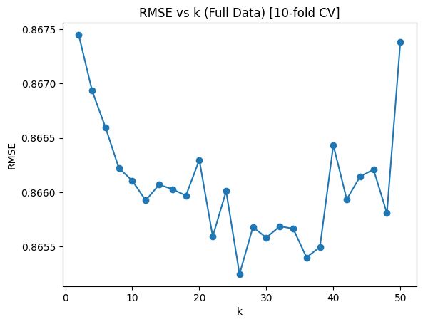
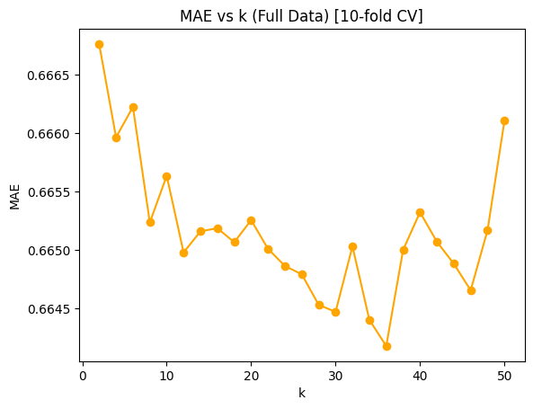
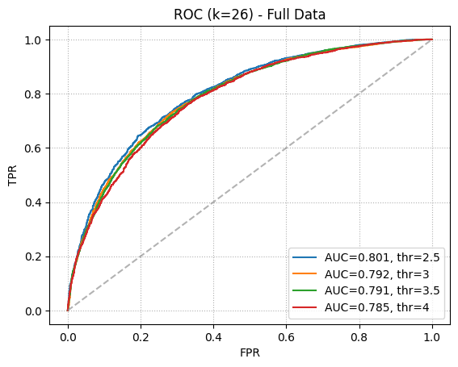
Popular k-sweep: 100%|██████████| 25/25 [13:57<00:00, 33.50s/it]
Popular Subset - Best RMSE=0.8559 at k=32
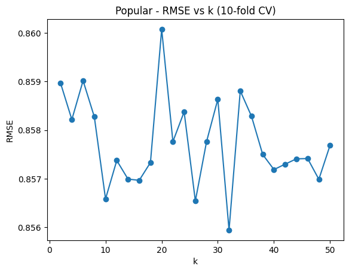
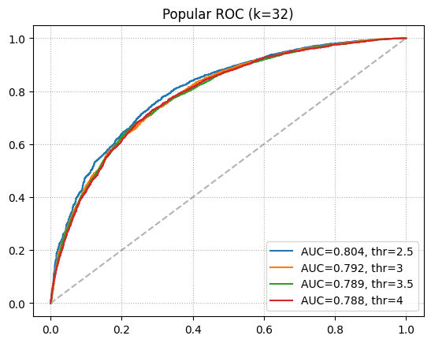
Unpopular k-sweep: 100%|██████████| 25/25 [00:52<00:00, 2.08s/it]
Unpopular Subset - Best RMSE=0.8953 at k=6
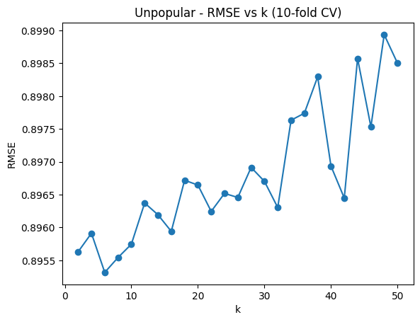
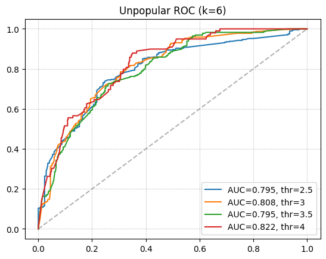
High-Variance k-sweep: 100%|██████████| 25/25 [00:02<00:00, 11.99it/s]
High-Variance Subset - Best RMSE=1.5611 at k=40
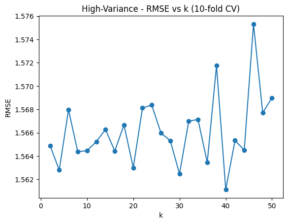
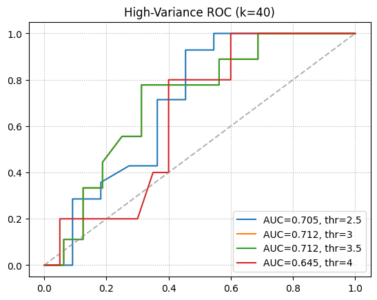
| Subset | 10-fold CV Avg RMSE |
|---|---|
| Full Data | 0.9347 |
| Popular | 0.9308 |
| Unpopular | 0.8408 |
| High-Variance | 0.7973 |
import numpy as np
import matplotlib.pyplot as plt
from sklearn.model_selection import KFold, train_test_split
from sklearn.metrics import mean_squared_error, roc_curve, auc
def trim_data(raw_data, method='popular', rating_threshold=2, var_threshold=2.0, min_var_count=5):
d={}
for (u,i,r,t) in raw_data:
if i not in d:
d[i] = []
d[i].append(r)
if method=='popular':
keep = {i for i in d if len(d[i])>rating_threshold}
elif method=='unpopular':
keep = {i for i in d if len(d[i])<=rating_threshold}
elif method=='high_variance':
keep = []
for i in d:
if len(d[i])>=min_var_count and np.var(d[i])>=var_threshold:
keep.append(i)
keep = set(keep)
else:
raise ValueError("Unknown trim method")
return [(u,i,r,t) for (u,i,r,t) in raw_data if i in keep]
def compute_user_means(data_array):
user_arr = np.array([row[0] for row in data_array])
rating_arr = np.array([row[2] for row in data_array])
user_set = np.unique(user_arr)
user_mean_dict = {}
for user_id in user_set:
idx = np.where(user_arr == user_id)
user_mean_dict[user_id] = np.mean(rating_arr[idx])
return user_mean_dict
def naive_predict(user_means_dict, user_id):
return user_means_dict.get(user_id, np.mean(list(user_means_dict.values())))
def naive_cv_and_roc(data_array, title):
user_means_dict = compute_user_means(data_array)
data_np = np.array(data_array, dtype=object)
kf = KFold(n_splits=10, shuffle=True, random_state=0)
rmses = []
for train_idx, test_idx in kf.split(data_np):
preds = []
truth = []
for row in data_np[test_idx]:
uid = row[0]
rating_true = row[2]
rating_pred = naive_predict(user_means_dict, uid)
preds.append(rating_pred)
truth.append(rating_true)
rmses.append(mean_squared_error(truth, preds, squared=False))
mean_rmse = np.mean(rmses)
print(f"{title} - 10-fold CV - Avg RMSE: {mean_rmse:.4f}")
idxs = np.arange(len(data_np))
train_idx, test_idx = train_test_split(idxs, test_size=0.1, random_state=0)
train_array = data_np[train_idx]
test_array = data_np[test_idx]
user_means_train = compute_user_means(train_array)
preds_roc = []
truth_roc = []
for row in test_array:
uid = row[0]
truth_roc.append(row[2])
preds_roc.append(naive_predict(user_means_train, uid))
thresholds = [2.5,3.0,3.5,4.0]
plt.figure()
for thr in thresholds:
y_true = [1 if r>thr else 0 for r in truth_roc]
y_score = preds_roc
fpr, tpr, _ = roc_curve(y_true, y_score)
roc_auc = auc(fpr, tpr)
plt.plot(fpr, tpr, label=f"AUC={roc_auc:.3f}, thr={thr}")
plt.plot([0,1],[0,1],'--',color='gray',alpha=0.6)
plt.title(f"{title} Naive Filter - ROC")
plt.xlabel("FPR")
plt.ylabel("TPR")
plt.legend(loc='best')
plt.grid(linestyle=':')
plt.show()
ratings_data = ratings_dataset.raw_ratings
pop_data = trim_data(ratings_data,'popular',2)
unp_data = trim_data(ratings_data,'unpopular',2)
hv_data = trim_data(ratings_data,'high_variance',2,2.0,5)
naive_cv_and_roc(ratings_data, "Full Data")
naive_cv_and_roc(pop_data, "Popular")
naive_cv_and_roc(unp_data, "Unpopular")
naive_cv_and_roc(hv_data, "High-Variance")
Full Data - 10-fold CV - Avg RMSE: 0.9347
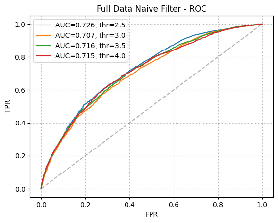
Popular - 10-fold CV - Avg RMSE: 0.9308
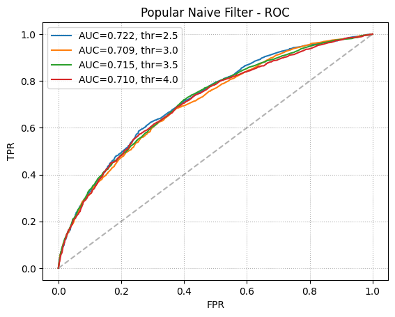
Unpopular - 10-fold CV - Avg RMSE: 0.8408
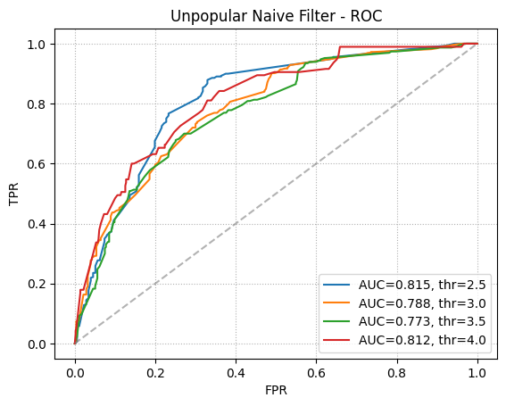
High-Variance - 10-fold CV - Avg RMSE: 0.7973
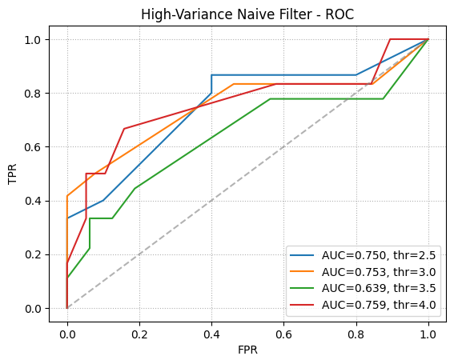
import matplotlib.pyplot as plt
from surprise import SVD, NMF, KNNWithMeans
from surprise import accuracy
from surprise.model_selection import train_test_split
from sklearn.metrics import roc_curve, auc
# Use Surprise's train_test_split, NOT sklearn's, on your Surprise dataset
trainset, testset = train_test_split(ratings_dataset, test_size=0.1, random_state=0)
# Fit each model on the Surprise 'trainset'
res_SVD = SVD(n_factors=26, n_epochs=20, verbose=False).fit(trainset).test(testset)
res_NMF = NMF(n_factors=18, n_epochs=50, verbose=False).fit(trainset).test(testset)
res_KNN = KNNWithMeans(k=20, sim_options={'name':'pearson'}, verbose=False).fit(trainset).test(testset)
fig, ax = plt.subplots()
thresholded_out = []
for row in res_SVD:
thresholded_out.append(1 if row.r_ui > 3 else 0)
fpr, tpr, _ = roc_curve(thresholded_out, [row.est for row in res_SVD])
ax.plot(fpr, tpr, lw=2, linestyle=':', label="AUC: "+str(auc(fpr,tpr))+", SVD")
thresholded_out = []
for row in res_NMF:
thresholded_out.append(1 if row.r_ui > 3 else 0)
fpr, tpr, _ = roc_curve(thresholded_out, [row.est for row in res_NMF])
ax.plot(fpr, tpr, lw=2, linestyle=':', label="AUC: "+str(auc(fpr,tpr))+", NMF")
thresholded_out = []
for row in res_KNN:
thresholded_out.append(1 if row.r_ui > 3 else 0)
fpr, tpr, _ = roc_curve(thresholded_out, [row.est for row in res_KNN])
ax.plot(fpr, tpr, lw=2, linestyle=':', label="AUC: "+str(auc(fpr,tpr))+", KNN")
ax.plot([0,1], [0,1], linestyle='--', lw=2, color='g', label='Chance', alpha=.5)
ax.legend(loc='best')
ax.grid(linestyle=':')
ax.set_title('ROC characteristics for SVD (MF), NMF and KNN')
ax.set_xlabel('FPR')
ax.set_ylabel('TPR')
plt.show()
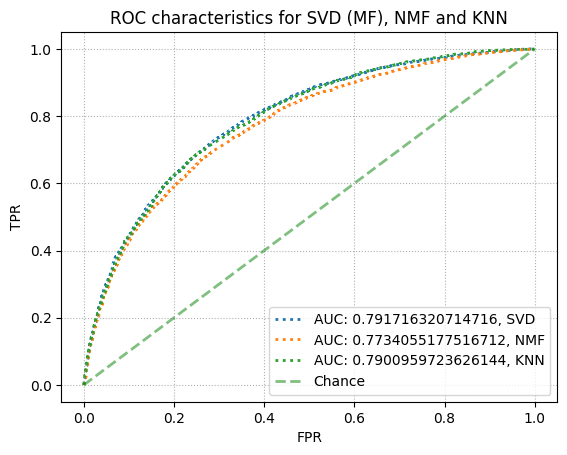